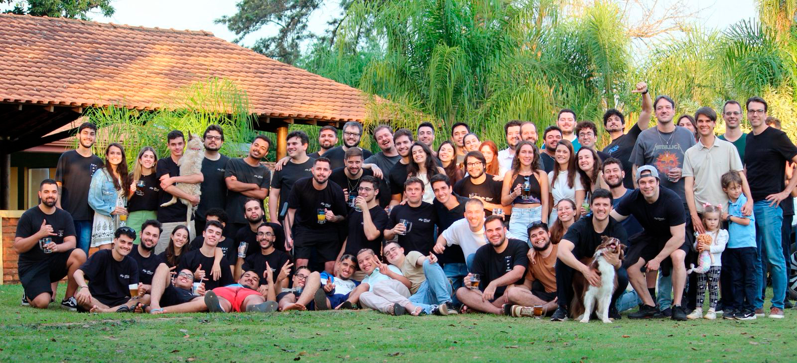
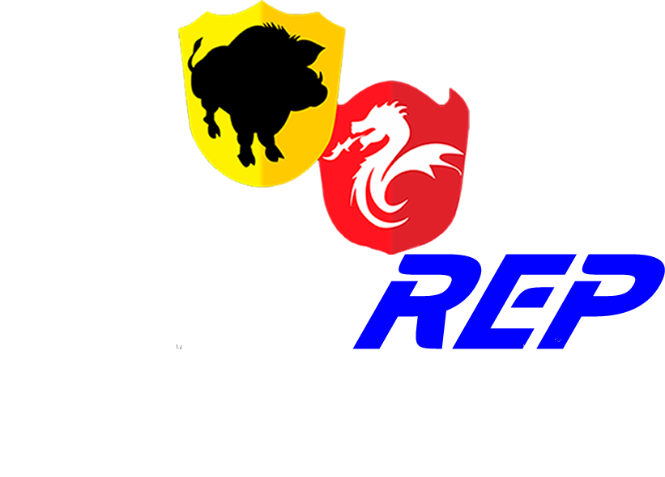

Aprecie a Graduação, Deguste a Faculdade. (Sem Moderação)Sobre Nós
Fundada em 2005 por estudantes das Engenharias da USP, a República Demorô é uma das mais tradicionais repúblicas universitárias de São Carlos. Hoje em dia, com moradores dos mais diversos cursos tanto da UFSCar quanto da USP, prezamos pela amizade e por partilhar os bons momentos da vida universitária entre nós!
Nossos Eventos
Organizado desde 2005, o Torneio InterREP se trata da maior competição entre Repúblicas de São Carlos. Organizada anualmente por nós, atualmente estamos na XIX Edição do Torneio, que conta com mais de 80 Repúblicas e 750 Atletas, o InterREP se divide em diversas áreas, como Marketing, Financeiro, Patrocínios, Operacional e Presidência.



Ao final do Torneio, sempre organizamos um evento de finalização do campeonato. O InterREP - A Festa se trata de um momento de comemoração, feito tanto para os ganhadores da competição, quanto feito para nós mesmos, com o objetivo de comemorarmos a finalização de um torneio trabalhoso para nós. Na última edição, contamos com a participação de 300 pessoas, com direito a entrega dos troféus para os campeões num clima perfeito de tardezinha, cerveja e piscina.


Churrasco dos Pais
Muito mais que uma República, a Demorô também é uma família. Por isso, todo ano organizamos nosso Churrasco de Pais aqui! Com a presença dos pais dos moradores, esse é um momento de extrema importância entre nós, estreitando os laços entre nossas famílias e nossa República!
Muito mais que uma República

Churrasco de Ex-Moradores
Anualmente, realizamos nosso tradicional Reencontro de Ex-Moradores. Aqui é onde percebemos a importância e a história da nossa República.
Compartilhando experiências, conhecendo melhor quem nós somos, nosso legado e como surgimos, nosso Reencontro é um momento extremamente especial e fundamental para nossa formação como Demorônios.
Regado à chopp, churrasco de alta qualidade e muita resenha, definitivamente é uma oportunidade única na vida de um universitário.
Uma família
Nossa Casa
Moradores

Educação Física
UFSCar

Engenharia de Produção
USP

Engenharia Mecânica
UFSCar

Biologia
UFSCar

Ciência da Computação
UFSCar

Engenharia Civil
USP

Mestrado em Engenharia Química
UFSCar

Engenharia de Materiais
UFSCar

Ciência da Computação
UFSCar

Engenharia Mecatrônica
USP

Arquitetura e Urbanismo
USP

Engenharia Elétrica
USP

Engenharia Elétrica
USP